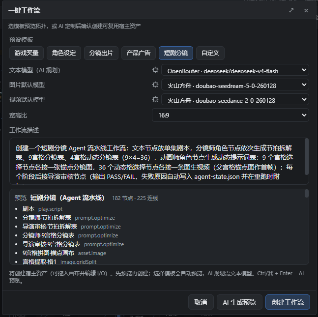

Guide · Short Drama & Film
Short-Drama Guide (Film Workbench)
Generate a host asset from the “Film pipeline” or “Film · single-shot polish” template in
One-Click Workflow, then double-click the 4-in-1 Film Workbench (film.workbench)
node to complete “① Storyboard Breakdown → ② Director Review with Auto-Revision → ③ Character & Scene Design → ④ Batch Shoot (Vision QC + Image-to-Video)” in a single full-screen workspace.
1. Preparation
- Models: Settings → Models → add and enable a provider (Volcengine Ark, Kling, MiniMax, Tongyi Qianwen, ModelScope, OpenRouter, DeepSeek, …). Select and set defaults for the text model (storyboard breakdown / director review / vision QC), the image model (character & location design sheets and shot keyframes) and the video model (image-to-video shot clips).
- Object storage (optional): Settings → Object Storage → enable one of Volcengine TOS / Alibaba Cloud OSS / Tencent Cloud COS / Amazon S3–compatible. Recommended when a cloud video model requires public reference URLs; skip it when using direct local uploads or local preview.
- Create or open a project from the home page and enter the workspace.
2. Step 1: Pick a film / short-drama template
With a project open, click One-Click Workflow under “New” in the workspace (or browse Marketplace → Workflows in the top bar). Two built-in short-drama / film templates are available:
-
“Film pipeline” (
short-drama): a compactScript (play.script)→Film Workbench (film.workbench)closed loop (defaults to vertical9:16, switchable to16:9and other ratios inside the workbench). Ideal for generating a whole short-drama or animated-comic episode end-to-end with incremental retakes. -
“Film · single-shot polish” (
short-drama9):Script→Film Workbench (film.workbench)→Shot (film.shot)→Keyframe (asset.image)→Shot clip (asset.video). Ideal when you want to finish breakdown and cast sheets in the workbench, then pull out individual shots by index and route them through dedicated image generation, the 10-in-1 Image Processing (image.process) workbench and video nodes.
- Choose “Film pipeline” or “Film · single-shot polish” under Preset templates.
- Click Preview template to inspect the generated nodes and link topology.
- Confirm with Create workflow, then choose a save directory and name.
- A new host asset appears in the asset library — double-click it or drag it onto a canvas to begin.

3. Step 2: Understand the generated nodes & ports
Double-click the host asset to dive into the inner graph, centered around the unified Film Workbench (film.workbench) node (replacing the legacy 9-grid / 4-grid slicing chain and dozens of separate nodes):
-
Script(play.script): paste your full script or story synopsis here (or feed it from an upstream “Script generation” node). -
Film Workbench(film.workbench):- Input ports:
in(script text) andin-image(optional reference images — existing character turnarounds or location art wired here are bound to matching cast entries first). -
Output ports:
out(storyboardstructured documentaiart.film-storyboard@1),out-cast(filmCastcharacter & location libraryaiart.film-cast@1),out-sheets(imagescharacter & location design sheets),out-images(imagesper-shot keyframe sequence),out-videos(videosper-shot video clip sequence),out-text(textreadable shot list & review report).
- Input ports:
-
Shot(film.shot, included in the single-shot polish template): connects to the workbench'sout(storyboard) andout-cast(cast library), picks one shot byfilmShotRef(shot number such as"1"or shot ID such as"S01-02"), and outputs that shot's keyframe prompt (out, with built-in@1/@2reference mapping), appearing cast & location sheets (out-refs, wired intoasset.image'sin-imageport to lock consistency) and motion prompt (out-motion, wired intoasset.video'sin-textport).
4. Step 3: Run the 4-stage loop in Film Workbench
After pasting your script into the “Script” node, double-click the “Film Workbench” node (or click “Open Film Workbench” in the Inspector) to enter the full-screen Dive workbench. Use the four stage tabs at the top to switch views; click “⚡ Run Full Pipeline” at the top-right to execute all four stages end-to-end, or click the current-stage run button to step through and review stage by stage:
-
① Storyboard Breakdown (
breakdown):- In the left sidebar, set the aspect ratio (
9:16for vertical short dramas,16:9for horizontal films), target shot count (0= let the story determine the shot count automatically instead of forcing 9 or 36 cells), per-shot duration preset (Auto / 4s / 8s / 10s / 15s, aligned with mainstream video model duration tiers) and visual style. - Running this stage produces scenes, shot cards (shot size, camera angle, camera move, duration in seconds, action/acting, dialogue, keyframe
imagePrompt, motionvideoPrompt) and the extracted character / location / prop entity table. - Edit any shot field directly on its card, add or remove shots, or click the Lock icon on a shot card so future re-breakdowns or director reviews never overwrite it.
- In the left sidebar, set the aspect ratio (
-
② Director Review (
review):- The AI director checks every shot against the script for narrative continuity, character consistency, pacing and shootability, outputting an overall verdict (
PASS/REVISE) and per-shot notes. - Shots that fail review are automatically rewritten and re-reviewed (up to
filmReviewMaxRounds, default 2 rounds), while locked shots are never touched.
- The AI director checks every shot against the script for narrative continuity, character consistency, pacing and shootability, outputting an overall verdict (
-
③ Character & Scene Design (
cast):- Generates character turnaround sheets and location environment anchor sheets from the extracted entity table, serving as the visual ground truth for every shot.
- Edit any character or location description on its card and click “▶ Generate / ↻ Rerun” to render or redraw that single card; unchanged entries hit the fingerprint cache and skip in milliseconds during stage runs.
-
④ Batch Shoot (
render):- Automatic
@1/@2reference binding: for each shot, the workbench automatically injects the appearing characters' and location's design sheets as reference images (each shot card displays the bound thumbnails and their exact@1,@2indices matching the order sent to the image model; enabling “Same-scene continuity” also feeds the previous shot's keyframe in the same scene). - Vision QC auto-reshoot: with “Vision QC” enabled, a multimodal model inspects each generated keyframe for anatomy glitches or prompt drift and automatically reshoots failed frames (up to the configured retry limit).
- Image-to-video & auto per-shot duration: switch output mode between “Keyframes only” and “Keyframes + Video”. Setting video duration to “Auto” (default) in the video parameter selector automatically reads each shot's
durationseconds from Storyboard Breakdown and maps it to a tier supported by the selected video model. Every shot card also has per-card buttons to shoot its keyframe or video individually.
- Automatic
5. Step 4: Incremental retakes & single-shot polish
- Edit one shot, reshoot only one shot: after tweaking a single shot's prompt, dialogue or cast list inside the Film Workbench, click “↻ Rerun” on that shot card (or run the stage) — all unchanged shots hit the fingerprint cache and skip immediately.
-
Shoot a specific shot range: fill in Shot range (e.g.
1-4,7) in the left sidebar of “④ Batch Shoot” to test-shoot the opening shots of a long script before committing to the full episode. -
Deep single-shot polish with the “Shot” node: when a key shot needs a different model or pixel-level touch-ups (inpainting, cutout, outpainting, 4K upscale), wire a “Shot” (
film.shot) node from the Film Workbench'soutandout-castports (or start from the “Film · single-shot polish” template) and insert the 10-in-1 “Image processing” (image.process) node between “Keyframe” and “Shot clip”. -
Assemble the full episode: connect the Film Workbench's
out-videosport to a “Video concat” (video.concat) node to splice all clips in one click, or drag the clips, dubbing and BGM onto the multi-track Final timeline to edit and export.
6. FAQ
- Which models are required? A text model handles Storyboard Breakdown, Director Review and Vision QC; an image model renders character/location sheets and shot keyframes; a video model renders image-to-video clips. You can pick dedicated models per stage in the Film Workbench sidebar, or rely on the defaults under Settings → Models.
-
How do I keep characters from “changing faces” across shots?
Generate clean character turnaround and location sheets in “③ Character & Scene Design” first (or feed existing art into the workbench's
in-imageport), verify that each shot card binds the right@1/@2thumbnails, pick a multi-reference-capable image model in “④ Batch Shoot”, and keep “Same-scene continuity” enabled. -
How does automatic video duration work?
In the video parameter selector of “④ Batch Shoot”, set Duration to “Auto”. Each shot automatically uses the
durationseconds assigned to it in “① Storyboard Breakdown”, mapped to the closest tier supported by your chosen video model. -
Why didn't re-running Storyboard Breakdown overwrite a shot I edited?
Any shot card with its Lock icon toggled on (
locked: true) is protected from both re-breakdown and director auto-revision; unlock the card first if you want the AI to rewrite it.